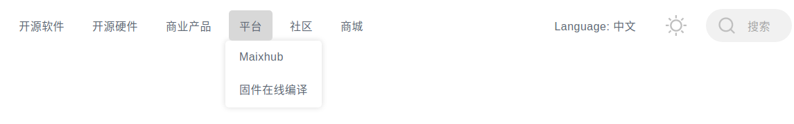
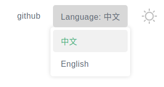
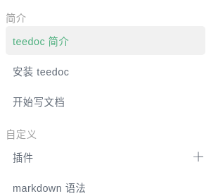

文档结构和配置
构建与预览
在有site_config.json的文档目录下执行
teedoc serve
在显示 Starting server at 0.0.0.0:2333 .... 后，就可以了
打开浏览器访问: http://127.0.0.1:2333
实时修改文件，保存文件后，默认过3秒后，会自动重新构建这个文件，然后浏览器会自动刷新
自动刷新的延迟时间可以设置，可以加
-t参数， 比如teedoc -t 0 serve设置为0秒延迟，
另外也可以在文档配置中设置，见后面配置参数rebuild_changes_delay的说明
如果只需要构建生成HTML页面，只需要执行
teedoc build
注意，如果是最终生成发布版本的文档， 一定要用
build命令来生成网站页面，serve命令生成的页面只能用于本地预览，会有多余的预览相关的代码，不适合用在生产环境部署
另外，也可以指定参数-d或者--dir 来指定文档目录，这样就不用在文档目录下面执行命令了，比如
teedoc -d /home/teedoc/my_doc build
构建文档删除
构建好的文档会被放到out目录下，程序不会主动删除，如果需要清除，请手动删除
文档目录结构
├─.github
├─docs
│ ├─develop
│ │ ├─en
│ │ └─zh
│ └─get_started
│ ├─assets
│ ├─en
│ └─zh
├─pages
│ └─index
│ ├─en
│ └─zh
├─static
│
└─site_config.json
.github: 自动构建脚本，在后面的章节将如何使用docs: 文档，包含了多份文档， 每份文档都是单独一个文件夹pages: 页面，包括主页、404页面等等页面static: 静态文件文件夹，比如存放图片site_config.json: 网站配置文件config.json: 除了site_config.json外，每个文档目录下都可以有config.json用来配置文档相关页面sidebar.json: 文档目录
在看如何使用配置文件之前， 一定要牢记， 配置文件很简单， 配置文件共只有两个文件名， 一个唯一的文档配置文件site_config 和 每个文档自己的配置文件config
配置文件
配置文件可以是 json 或者 yaml 格式的文件，选择你喜欢使用的即可， 如果没接触过也不要害怕， 搜索一个教程花 10 分钟学习就能完全掌握。
如果你的文档目录内容很多，建议使用yaml格式，看起来会更加简洁
teedoc 提供了 json 和 yaml 格式互相转换的命令
从 json 转到 yaml
teedoc -f ./config.json json2yaml
从 yaml 转到 json
teedoc -f ./config.yaml yaml2json
从 gitbook SUMMARY.md 转到 json
teedoc -f ./SUMMARY.md summary2json
从 gitbook SUMMARY.md 转到 yaml
teedoc -f ./SUMMARY.md summary2yaml
site_config.json 网站配置
网站的配置项，比如网站名称，页面路由，插件配置等等
下面的示例配置文件看起来配置项比较多，不要被吓到，其实很简单，主要几个配置项，掌握了就思想就容易了
配置文件是json格式， 比如：
{
"site_name": "teedoc",
"site_slogon": "happy to write",
"site_root_url": "/",
"site_domain": "teedoc.github.io",
"site_protocol": "https",
"config_template_dir": "./",
"source": "https://github.com/teedoc/teedoc.github.io/blob/main",
"route": {
"docs": {
"/get_started/zh/": "docs/get_started/zh",
"/develop/zh/": "docs/develop/zh",
},
"pages": {
"/": "pages/index/zh",
},
"assets": {
"/static/": "static",
"/get_started/assets/": "docs/get_started/assets"
},
"/blog/": "blog"
},
"translate": {
"docs": {
"/get_started/zh/": [ {
"url": "/get_started/en/",
"src": "docs/get_started/en"
}
],
"/develop/zh/": [ {
"url": "/develop/en/",
"src": "docs/develop/en"
}
]
},
"pages": {
"/": [ {
"url": "/en/",
"src": "pages/index/en"
}
]
}
},
"executable": {
"python": "python3",
"pip": "pip3"
},
"plugins": {
"teedoc-plugin-markdown-parser":{
"from": "pypi",
"config": {
}
},
"teedoc-plugin-theme-default":{
"from": "pypi",
"config": {
"dark": true,
"env":{
"main_color": "#4caf7d"
},
"css": "/static/css/custom.css",
"js": "/static/js/custom.js"
}
}
}
}
site_name: 网站名site_slogon: 网站标语site_root_url: 网站根目录路径， 使用默认值/即可; 如果需要将生成的内容放到网站的文件夹中（不是根目录的文件夹），可以设置site_domain: 网站域名，目前用到的地方：生成sitemap.xml和robots.txtsite_protocol: 网站协议，http或者https，目前用到的地方：生成sitemap.xml和robots.txtconfig_template_dir:config模板文件，其它文档目录的config.json或者config.yaml可以import这里面的文件，默认位置为site_config所在目录source: 文档源码路径， 比如https://github.com/teedoc/teedoc.github.io/blob/main，这里main是文档主分支，会在文档页面添加Edit this page按钮（链接），点击可跳转到对应文件源码。可以留空，则不添加链接。另外，可以在config.json中添加"show_source": "编辑本页"来定义按钮的文字内容为编辑本页，如果希望文档没有这个按钮，则设置为"show_source": false；也可在文件(md或ipynb文件)的头信息中添加show_source: 编辑本页或者show_source: false来设置route: 网页路由，包含了文档和页面以及资源文件的路由，比如文档的路由
"docs": {
"/get_started/zh/": "docs/get_started/zh",
"/get_started/en/": "docs/get_started/en",
"/develop/zh/": "docs/develop/zh",
"/develop/en/": "docs/develop/en"
},
key代表了最终生成的网站中文档的url, 后面的值则是对应的源文档路径，
比如源文档docs/get_started/zh/README.md，构建后会生成文件out/get_started/zh/index.html, 如果不是md文件（即不支持的文件），则会原封不动地拷贝文件，最后out目录就是生成的网站
pages同理，assets则不会进行文档转换，直接拷贝到相应的目录
translate: 翻译， 指定文档对应的翻译版本的url和文件路径， 同样，在翻译版本的路径下需要有config和sidebar配置文件，并且config文件中指定locale来达到指定被翻译的文档语言， 比如中文可以是zh,zh_CN,zh_TW， 英文是en，en_US等。翻译的sidebar，以及文档路径需要和源文档一致，如果没有翻译可以不放翻译文件，用户访问没有翻译的页面时会跳转到no_tanslate.html提示没有翻译，更多详情请看国际化 i18nexecutable: 可执行程序设置， 这里可以设置python和pip的可执行程序名，在安装插件时会用到plugins: 插件配置， 主要有名字， 来源， 配置项组成。
名字可以在github 搜索teedoc-plugin来找到开源的插件，也欢迎你参与编写插件（只需要动 Python 语法即可）；
from字段填pypi即可，如果插件下载到了本地也可以填写文件夹路径，也可以直接填git路径比如git+https://github.com/*****/******.git
配置项则由具体的插件决定，比如teedoc-plugin-theme-default就有dark选项来选择是否启用暗黑主题
rebuild_changes_delay: 检测到文件更改后，延迟多少秒自动重新生成该文档， 浏览器中会自动刷新页面，默认为3秒，最短可以设置为0秒, 可以使用teedoc -t 3 serve或者teedoc --delay serve来覆盖这个设置robots: 自定义robots.txt的内容， 比如"User-agent": "*"代表允许所有客户端爬取， 这对SEO会有影响。 比如不允许爬取JPEG图片："Disallow": "/.jpeg$"， 不允许访问admin目录:"Disallow": "/admin", 具体和robots.txt的格式要求相同layout_root_dir: 布局模板根目录, 默认为layout, 即需要布局模板文件时会自动到这个文件夹下面寻找layout_i18n_dirs:layout的国际化翻译目录，可以是路径比如locales，在某些特殊情况下也可以设置多个路径比如["locales1", "locales2]。 文件内容可以参考i18n制作
config.json 文档配置
这是针对每个文档的配置，放在每个文档的根目录， 比如docs/get_started/zh/config.json， 各个文档相互独立，可以设置一样的来保持网站导航栏一致
在这里面可以配置每个文档的导航栏， 以及页尾（footer）的内容, 也可以设置插件的config项，在当前文档会覆盖site_config.json中的配置，从而实现不同文档不同语言（国际化/i18n）或者样式等
比如：
{
"import": "config_zh",
"id": "teedoc_page",
"class": "language_zh",
"locale": "zh-CN",
"navbar": {
"title": "teedoc",
"logo": {
"alt": "teedoc logo",
"src": "/static/image/logo.png"
},
"home_url": "/",
"items": [
{
"url": "/get_started/zh/",
"label": "安装使用",
"position": "left"
},
{
"url": "/develop/zh/",
"label": "开发",
"position": "left"
},
{
"url": "https://github.com/neutree/teedoc",
"label": "github",
"target": "_blank",
"position": "right"
},
{
"label": "语言: ",
"position": "right",
"type": "selection",
"items": [
{
"url": "/get_started/zh/",
"label": "中文"
},
{
"url": "/get_started/en/",
"label": "English"
}
]
}
]
},
"footer":{
"top":[
{
"label": "链接",
"items": [
{
"label": "使用 teedoc 构建",
"url": "https://github.com/neutree/teedoc",
"target": "_blank"
},
{
"label": "Copyright © 2021 Neucrack",
"url": "https://neucrack.com",
"target": "_blank"
}
]
},
{
"label": "源码",
"items": [
{
"label": "github",
"url": "https://github.com/neutree/teedoc",
"target": "_blank"
},
{
"label": "本网站源文件",
"url": "https://github.com/teedoc/teedoc.github.io",
"target": "_blank"
}
]
}
],
"bottom": [
{
"label": "*ICP备********号-1",
"url": "https://beian.miit.gov.cn",
"target": "_blank"
},
{
"label": "*公网安备**************号",
"url": "https://beian.miit.gov.cn/#/Integrated/index",
"target": "_blank"
}
]
},
"plugins": {
"teedoc-plugin-search":{
"config": {
"search_hint": "搜索",
"input_hint": "输入关键词，多关键词空格隔开",
"loading_hint": "正在加载，请稍候。。。",
"download_err_hint": "下载文件失败，请刷新重试或检查网络",
"other_docs_result_hint": "来自其它文档的结果",
"curr_doc_result_hint": "当前文档搜索结果"
}
}
},
"show_source": "编辑本页"
}
import: 可以从模板文件导入配置，没有后缀的文件名。比如site_config中设置了config_template_dir为./，这里填"import": "config_zh", 则代表从导入site_config同目录下的config_zh.json（优先）或者config_zh.yaml。
然后可以添加当前文档的配置，覆盖模板文件，同样的关键字，修改不同的内容即可，如果是数组(列表)，要替换模板文件的内容，需要在模板文件的数组项中增加id关键字，然后修改，如果不指定id关键字，则会追加到数组中。比如模板文件config_zh：
{
"locale": "zh-CN",
"navbar": {
"title": "teedoc",
"items": [
{
"url": "/get_started/zh/",
"label": "安装使用",
"position": "left"
},
{
"id": "language",
"label": "Language: ",
"position": "right",
"items": [
{
"url": "/zh",
"label": "中文"
},
{
"url": "/en",
"label": "English"
}
]
}
]
}
}
具体某个文档的配置文件：
{
"import": "config_zh",
"navbar": {
"title": "teedoc123",
"items": [
{
"id": "language",
"label": "Language: ",
"position": "right",
"items": [
{
"url": "/get_started/zh",
"label": "中文"
},
{
"url": "/get_started/en",
"label": "English"
}
]
}
]
}
}
id: 文档的id， 一般情况下不需要写，会将id设置到config.json目录下所有页面的<html>标签上。 比如这里设置了teedoc_page， 那么这个目录下所有页面都会变成<html id="teedoc_page"> ... </html>。 如果markdown文件设置了id，则会覆盖这个值，即每个页面只能有一个id。class: 文档的class， 一般情况下不需要写，会将class设置到config.json目录下所有页面的<html>标签上， 多个class用空格隔开。 比如这里设置了language_zh， 那么这个目录下所有页面都会变成<html class="language_zh"> ... </html>。 如果markdown文件设置了class，则会追加，比如config.json中设置了language_zh， 在README.md中设置了class: zh_readme， 则最终是class="language_zh zh_readme"。 这个功能方便自定义每个页面的样式，或者不同文档的样式。locale: 地域编号， 可以从这里看到， 比如zh,zh_CN,en_US,ja等。也可以通过程序babel获取
pip install babel
pybabel --list-locales
navbar: 导航栏设置，每个文档都可以单独设置导航栏，要想保持整个网站统一，修改每个配置相同即可。关键字type用于第一层，用来表示导航栏的这个标签的类别，取值有：link: 普通链接，不写type关键字时默认是这个选项list: 有子项，会以下拉菜单的形式显示

selection: 单选项，比如选择语言。 不写type关键字并且有items关键字时，默认是这个选项

language: 如果在site_config中设置了translate, 则会自动将language类型的items填充为语言列表，这样就不用我们手动写语言列表了！ 效果和selection一样(其实内部代码就是将language类型自动替换为selection)
footer: 网站页脚，分为上下两个部分，上部又可以添加多个栏目，每个栏目里面可以有多个值plugins: 配置插件的配置项，如果site_config.json中已经设置了，会覆盖，即子config的优先级更高show_source: 在site_config.json中设置了source关键词的前提下，即文档源码路径， 比如https://github.com/teedoc/teedoc.github.io/blob/main，这里main是文档主分支，会在文档页面添加Edit this page按钮（链接），点击可跳转到对应文件源码。设置"show_source": "编辑本页"来定义按钮的文字内容为编辑本页，不设置默认为Edit this page, 如果希望文档没有这个按钮，则设置为"show_source": false；也可在文件(md或ipynb文件)的头信息中添加show_source: 编辑本页或者show_source: false来设置
sidebar.json 文档目录（侧边栏）设置
这里面设置文档的目录，每个文档一份，相互独立
文件路径使用相对路径，填文件名即可， README.md 会被自动转换成index.html
另外也可以不写file路径，直接url， 比如"url": "/get_started/zh/", 同时可以设置"target":"_blank" 在新窗口打开，不设置则在当前窗口打开
第一层 items中的项目，如果只有label，没有url，file和 items， 则会在侧边栏中添加一个分类标记,效果如下：

另外, 如果希望目录默认展开, 添加"collapsed": false即可
比如：
items:
- label: teedoc 简介
file: README.md
- label: 安装 teedoc
file: install/README.md
- label: 开始写文档
file: usage/start.md
- label: 插件
file: plugins/README.md
collapsed: false
items:
- label: 主题插件
file: plugins/themes.md
- label: 其它插件
file: plugins/others.md
- label: markdown 语法
file: syntax/syntax_markdown.md
- label: 使用了 teedoc 的网站
file: usage/sites.md
- label: 更多样例
items:
- label: 二级子目录样例
items:
- label: 三级子目录样例
items:
- label: 文章1
file: more/example_docs/doc1.md
- label: 文章2
file: more/example_docs/doc2.md
- label: 这是一个链接
url: https://github.com/teedoc/teedoc
target: _blank
或者 json 格式
{
"items":[
{
"label": "teedoc 简介",
"file": "README.md"
},
{
"label": "安装 teedoc",
"file": "install/README.md"
},
{
"label": "开始写文档",
"file": "usage/start.md"
},
{
"label": "插件",
"file": "plugins/README.md",
"collapsed": false,
"items":[
{
"label": "主题插件",
"file": "plugins/themes.md"
},
{
"label": "其它插件",
"file": "plugins/others.md"
}
]
},
{
"label": "markdown 语法",
"file": "syntax/syntax_markdown.md"
},
{
"label": "使用了 teedoc 的网站",
"file": "usage/sites.md"
},
{
"label": "更多样例",
"items":[
{
"label": "二级子目录样例",
"items":[
{
"label": "三级子目录样例",
"items":[
{
"label": "文章1",
"file": "more/example_docs/doc1.md"
}
]
},
{
"label": "文章2",
"file": "more/example_docs/doc2.md"
}
]
},
{
"label": "这是一个链接",
"url": "https://github.com/teedoc/teedoc",
"target": "_blank"
}
]
}
]
}